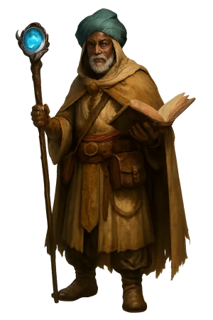
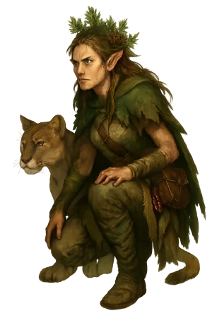

Home
What is Pathfinder?
Pathfinder, often referred to as Pathfinder First Edition or PF1, is a tabletop role-playing game where a group of players collaboratively create and play characters in a shared fantasy world under the guidance of a Game Master (GM). Each player designs a unique character—selecting attributes such as race, class, skills, and abilities—and uses dice with various numbers of sides, primarily the twenty-sided die (d20), to determine the success or failure of in-game actions. The GM constructs the setting, narrates events, and adjudicates rules to guide the story as it unfolds.
Originally published by Paizo Publishing in 2009, Pathfinder 1st Edition was created to continue and refine the mechanics of the Dungeons & Dragons 3.5 Edition rules after Wizards of the Coast announced a shift to D&D Fourth Edition. The new edition significantly altered core mechanics, moving away from the detailed, simulationist style of 3.5 in favor of a more simplified and uniform system focused on balance and ease of play, which many players and publishers felt limited customization and complexity. Additionally, the new edition introduced a more restrictive licensing model that reduced support for third-party publishers. In response, Paizo chose to build Pathfinder on the D&D 3.5 ruleset, which had been released under the more permissive Open Gaming License, allowing them to preserve and expand upon the existing system. Over subsequent printings, the game introduced its own expansions, clarifications, and optional rules, resulting in a comprehensive rule system that supports campaign play, character customization, and a vast array of published adventures.
Like Dungeons & Dragons 5th Edition (D&D 5E), Pathfinder uses the d20 System as its core mechanic. Both games share terminology—such as hit points for measuring a character’s health, levels that represent power progression, and familiar fantasy archetypes like fighters, wizards, and rogues. Combat is structured in rounds and turns, and both systems rely on character classes and spells drawn from a shared fantasy tradition.
Pathfinder 1st Edition differs from D&D 5E in its level of granularity and character customization. Whereas D&D 5E streamlines skills and class features, Pathfinder provides a point-based skill system along with extensive lists of feats (special abilities) and a broader selection of base classes and archetypes. This design emphasizes detailed optimization and tactical choices: characters often make more frequent and specific mechanical decisions, such as selecting individual skill ranks or purchasing specialized combat feats at each level.
The game also includes more detailed encounter and damage rules, such as critical hit confirmation rolls, detailed weapon properties, and a codified system for crafting magic items. Pathfinder’s bestiary and adventure paths typically offer more modular content, with rules explicitly covering optional subsystems like prestige classes, multiclassing options, and variant initiative systems.
Pathfinder 1st Edition builds on the foundation of D&D 3.5, preserving its core mechanics while adding greater flexibility and detail. For those interested in a game system that emphasizes mechanical depth, character-building variety, and a wide range of optional rules, Pathfinder offers a well-supported and expansive framework. While it shares roots with systems like D&D 5E, it distinguishes itself through its complexity and emphasis on player choice.
Additional Resources
- Archives of Nethys The official Pathfinder reference document with all the offical rules from everything published.
- Mordan's Vault My own 3rd-party content.
- D20PFSRD A popular, unofficial, reference document for Pathfinder that contains both official and 3rd-party content.
- donjon Contains helpful generators and additional tools for both Pathfinder and other systems.